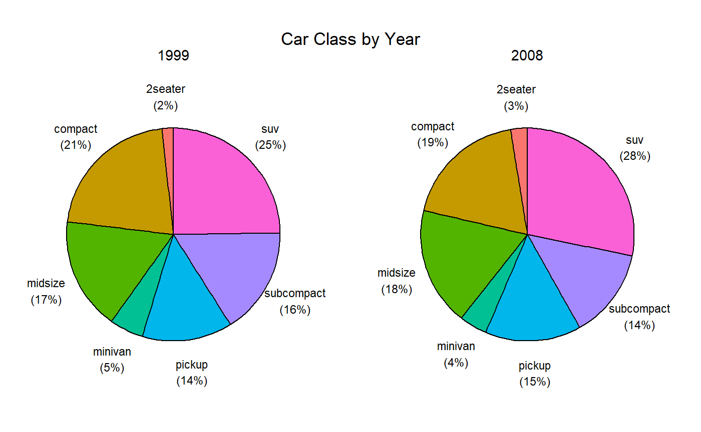

ggpie.RmdPie charts are controversial in data science and statistics. Humans are better at judging length than they are volume. For this reason, bar charts are often a more effective method of visualizing differences among percentages.
However, pie charts are ubiquitous in industry, and when one is trying to visual part-whole relationships, rather than compare frequencies, they can be effective.
It bothers me that R has no simple and attractive way to create pie charts - thus this package. The graphs returned are ggplot2 graphs, and can be further manipulated using that system.
The mpg data frame in the ggplot2 package contains data on the fuel economy of automobiles from 1999 to 2008. We’ll focus on the variables year and class. To create a single pie chart displaying the percentage of car classes, use code like the following:
By default, pie slices are labeled with percentages and a legend is created.
The position of the labels is controlled with the offset parameter. It captures the distance of the label from the origin of the pie.
If the option legend = FALSE is included, each slice is labeled directly.
Many addtional options are available. For example
You can include a by variable in the function. This will create a separate pie chart for each level of the by variable.

The graph below demonstrates several additional options, and how ggplot2 functions can be added to a graph created by the ggpie function.
ggpie(mpg, drv, trans,
nrow=3, # number of rows
border.color="white", # border color
border.width=1.5, # border width
label.color="black", # label color
label.size=3, # label size
offset=.7, # label position
title="Auto Drive Type by Transmission\n") +
# place legend in lower right (x=.8, y=.2, where each is on a 0-1 scale)
theme(legend.position=c(.8, .2)) +
# specify colors manually
scale_fill_manual(values=c("yellow", "skyblue", "green"))See the ggpie function documentation for more details.